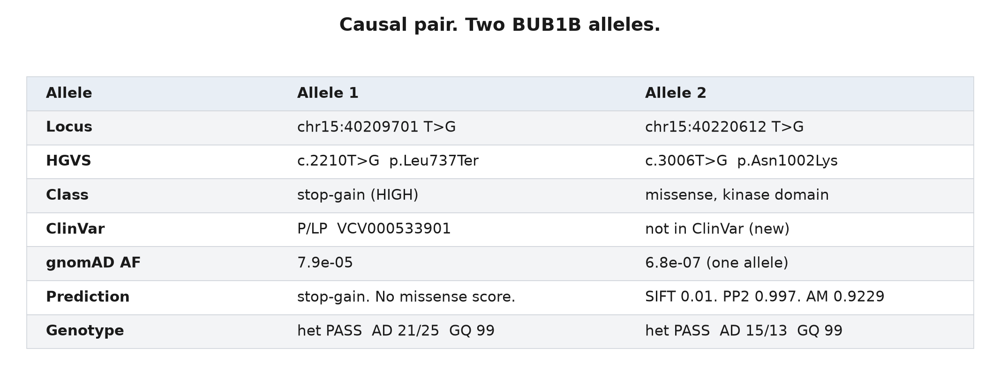
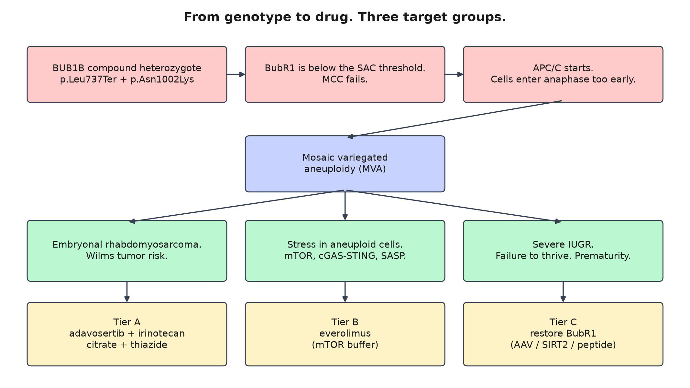
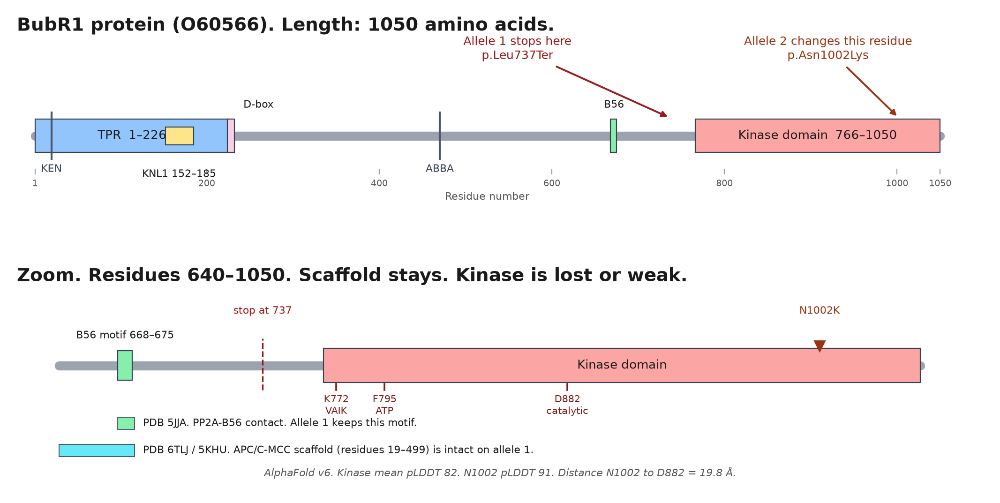
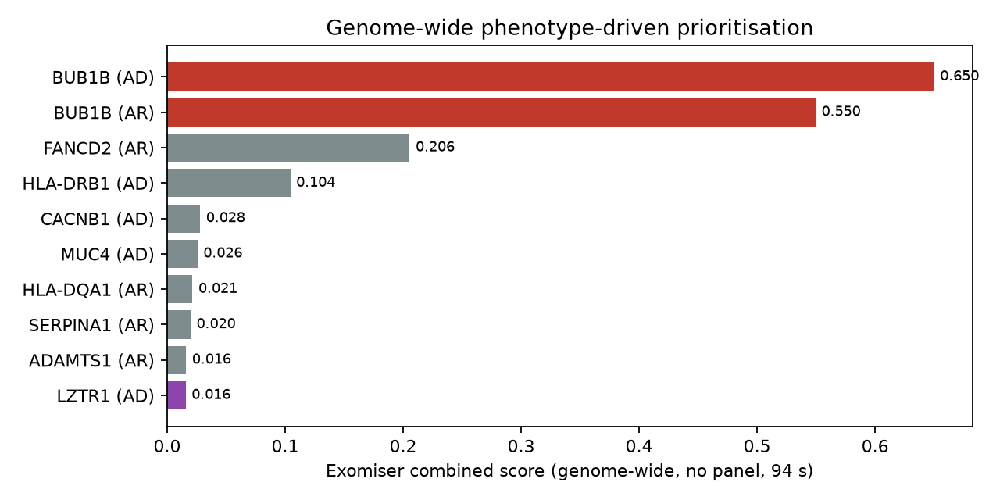

A real child. A checkpoint that does not work. A three-tier plan.
Mosaic Variegated Aneuploidy (MVA). Cells lose and gain chromosomes.
Embryonal rhabdomyosarcoma. Severe growth failure. Nephrocalcinosis.
Team bigbag. Rare Disease, Real Kid: MVA Hackathon 2026.
The cause. Confirmed.

Track 1 score: 100.0 rank points. F-max 1.000. Full match.
The constraint
No approved drug increases BubR1.
We must not decrease checkpoint function more. The checkpoint already does not work.
We map three target groups:
the tumor, the stress, and the protein.
Mechanism. From genotype to drug.

Tier A. Treat the signs that we see today.
Adavosertib plus irinotecan.
A pediatric trial sets the dose (
NCT02095132
). The trial has a rhabdomyosarcoma arm.
Potassium citrate plus a thiazide.
Standard care for nephrocalcinosis (
Weigert and Hoppe
). Safe in children. Protects bone.
Alisertib.
Alternate mitotic drug. COG phase 2 trial
ADVL0921
.
Tier B. Decrease the stress.
Aneuploid cells increase mTOR. These cells release inflammatory signals.
Everolimus
decreases that signal. Pediatric safety data are large (
EXIST-1
, transplant).
Honest claim:
this drug decreases damage. This drug does not repair the checkpoint.
Tier C. Restore the protein.
In mice, more BubR1 repairs the checkpoint and extends lifespan (
Baker 2013
).
This child still makes weakened BubR1 from the missense allele.
Three routes:
AAV augmentation. SIRT2-axis stabilization. Peptide rescue.
Both alleles change the kinase domain. The scaffold stays.

Rigor. Three independent methods agree.

Panel scan. Exomiser on the full genome (94 s, no panel). Clinical databases. All point to BUB1B.
Scale. A laptop runs the pipeline.
Open Targets. DGIdb. ChEMBL. everycure/matrix-scores (39.5 million pairs). All public APIs.
Full pipeline: about 6 hours and 1 USD of electricity. Genome-wide check: 94 seconds.
The method applies to other recessive chromosomal-instability disorders.
Code and evidence: github.com/bigbag/mva-hackathon-2026
The request
Give standard symptom care now.
Use trial-controlled cancer options when needed.
Start a research program on BubR1 restoration.
This family shared the genome of their child. We give them a clear plan.
Works Cited (MLA)
Baker et al.
Nat Cell Biol
2013.
PubMed 23242215
·
doi:10.1038/ncb2643
Franz et al. EXIST-1.
Lancet
2013.
PubMed 23158522
Franz et al. EXIST-1 long-term.
PLOS ONE
2016.
PubMed 27351628
Hanks et al.
Nat Genet
2004.
PubMed 15475955
Malumbres and Villarroya-Beltri.
Nat Rev Genet
2024.
PubMed 39169218
Mossé et al. ADVL0921.
Clin Cancer Res
2019.
PubMed 30777875
NCT02095132.
clinicaltrials.gov/study/NCT02095132
Hackathon.
HF Space
Data.
HF Dataset
Works Cited (MLA), continued
Weigert and Hoppe.
Front Pediatr
2018.
PubMed 29707529
Yost et al.
Nat Genet
2017.
PubMed 28553959
Zhang et al.
Nat Aging
2023.
PubMed 37118121
Villarroya-Beltri et al.
Sci Adv
2022.
PubMed 36322655
Cole et al.
Cancer
2023.
PubMed 37081608
Open Targets BUB1B.
ENSG00000156970
ClinVar.
VCV000533901
Code.
github.com/bigbag/mva-hackathon-2026
Thank you
Team bigbag.
github.com/bigbag/mva-hackathon-2026
Hackathon:
sagebio-rare-disease-real-kid-mva-hackathon-2026.hf.space
Data:
huggingface.co/datasets/SageBio/mva-hackathon-2026-data
Organizers: Sage Bionetworks, MVA Society, Hugging Face, BEACON. Sponsors: AWS and Anthropic.
Above all,
the family
.